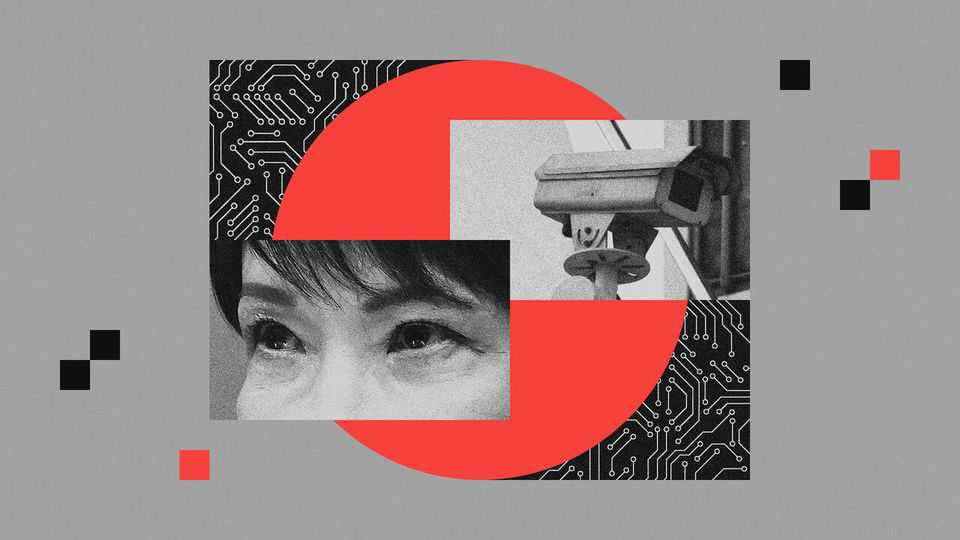

Japan reckons with a spate of cyber attacks
Efforts to reinforce cyber-security are not keeping pace with threats

Oct 8th 2026
THE UNEASE is mounting in Japan. On September 25th Times Car, a big car-hire company, fell prey to hackers who gained access to more than 6m customer accounts. A few days later a popular barbecue chain reported a data breach affecting nearly 11m accounts. A big securities firm was also hit. A public university had to shut down for a week after a ransomware attack. And then a ransomware attack on a subsidiary of SoftBank disrupted services for some 500 firms and local governments, knocking websites offline.
The spate of large-scale attacks is forcing Japan to confront its cyber vulnerabilities. Forescout, a cyber-security firm, sees a sharp increase in attacks on Japan this year compared with recent ones. Japanese officials are scrambling to strengthen cyber-defences, as part of a broader shift towards toughening up on national security. Under a new Active Cyber Defence law, which took effect on October 1st, Japan’s Self-Defence Forces (SDF) and its police agency will be allowed to pre-emptively infiltrate and neutralise hostile servers for the first time. Yet as artificial intelligence fuels cybercrime and empowers cyber-attackers, Japan may struggle to keep pace.
Japan has long lagged behind in cyber-security. In 2021 the International Institute for Strategic Studies, a British think-tank, placed it in the lowest of three tiers in an assessment of 15 countries’ cyber capabilities (America was in tier one and Britain tier two), citing fragmented governance, weak intelligence and underdeveloped offensive capabilities.
Some of these shortcomings have roots in the country’s pacifist, post-war constitution, which has complicated efforts to identify and counter cyber-threats. Japanese firms often fail to train employees in basic cyber-hygiene. Smaller companies may lack the resources to invest in cyber-security; vulnerabilities in their systems can be exploited to infiltrate higher up the supply chain. A lack of digital know-how can be found in surprisingly high places, too. In 2018 Japan’s then cyber-security minister made headlines by admitting he had never used a computer in his life.
Big incidents in the past year have concentrated minds, says Cartan McLaughlin, the chief executive of Nihon Cyber Defence, a cyber-security firm in Tokyo. In September 2025 a ransomware attack against Asahi Group Holdings, a food-and-beverage giant, brought almost all of its 30 factories, as well as call centres and shipments, to a halt. (Qilin, a Russian criminal group, claimed responsibility.) Stocks of Asahi Super Dry, its popular beer, vanished from shelves and bars. If that was bad news for salarymen hoping for an after-work pint, the hangover for Asahi was even worse: its net profit plunged by 37% last year.
The government fears state-backed attacks from belligerent neighbours such as China, Russia and North Korea. Officials are grappling with the reality that “an attack on critical infrastructure could cost lives,” says Yoshioka Katsunari of Yokohama National University, who sat on the government’s expert panel for the new cyber-defence law. The shift to a proactive cyber-defence posture has drawn parallels with the government’s recent adoption of long-range missiles that allow it to strike military targets inside an enemy’s territory to prevent attacks. Japan is gradually allowing itself to do things that other countries have long done, including in cyber-space, observes Tsuchiya Motohiro of Keio University, near Tokyo. Public opposition to such moves is weakening.
The threats are growing. AI has made it easier for attackers to draft more convincing phishing emails. The Japanese language once afforded a layer of protection. “Japanese was a hard nut to crack for previous large-language models,” says Elif Sercen Nurcan, a cyber-security expert, adding that awkward wording or an unusual tone could give a fraudulent email away. “This barrier has now dissolved.”
Having access to new defensive tools or legal powers is not the same as adopting them effectively. And basic defences have not always kept pace. Although Japanese companies have rapidly acquired DMARC, a system designed to stop criminals spoofing legitimate email addresses, only 43% of those surveyed had it set up to effectively block suspicious messages, compared with 83% in America.
The police and SDF have no experience conducting active cyber-operations. “Will they suddenly be able to do it just because they are allowed to?” asks Mr Yoshioka. They hope they will be able to recruit new specialists, but the government estimates that Japan is already short of 110,000 cyber-security professionals. It urgently needs them to fight back. ■
For exclusive coverage of Asian politics, economics and security, sign up to Asia Bulletin, our weekly subscriber-only newsletter.